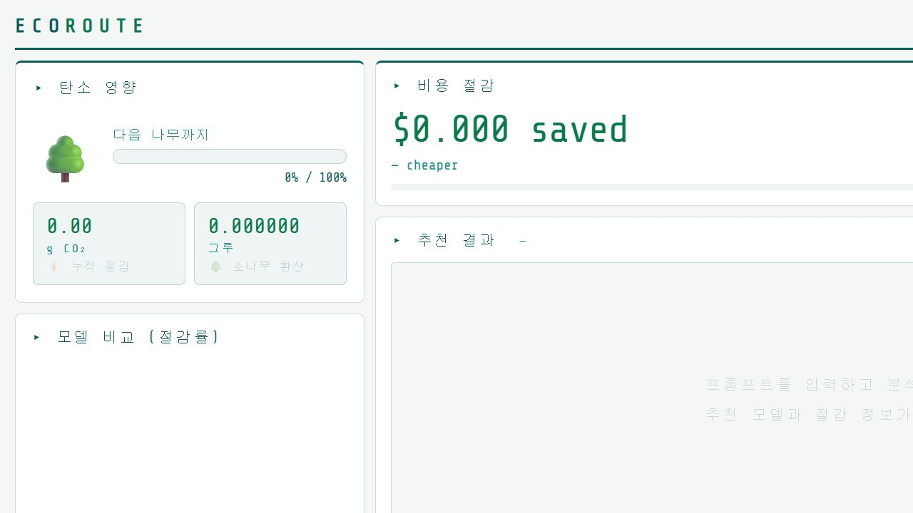

RAG · SEMANTIC CACHE · EVALUATION · WEB UI
EcoCache
교내 공지와 홍보 게시물을 검색 가능한 지식베이스로 만들고, 반복·유사 질의에는 QA 캐시를 우선 적용하는 학사 도우미를 구현했습니다. 검색·탄소 평가 결과를 웹 UI로 연결하고, 실험 결과를 바탕으로 후속 논문을 작성했습니다.
RAG 검색 구조를 구현하고 평가 질의 실험, 정확도 계산, CIASC alpha 값 탐색을 직접 수행했습니다. 발표 근거로 활용할 LLM 연산·탄소배출 절감 가능성 조사와 실험 결과 정리도 담당했습니다.
Problem
공지에 흩어진 신청 기간, 대상, 절차를 학생이 매번 직접 찾아야 했습니다.
Implementation
BGE-m3-ko 임베딩과 Qdrant를 사용해 QA 우선 검색 후 문서 검색으로 보완하는 2단계 검색 구조를 구현했습니다.
Retrieval Tuning
50문항에서 top_k·threshold·chunk를 비교해 Top-3 정확도 90.48%, 오답 캐시 0건을 기록한 설정을 선택했습니다.
Service Validation
25문항에서 출처 정확도 24/25, 문서 검색 적중 20/21을 기록하고 retrieval 배치 CO2 0.3852g을 측정했습니다.
Product UI
학사 질의응답과 모델 선택, 캐시 상태, 탄소·비용 영향을 확인할 수 있는 사용자 화면을 구현했습니다.
Research Output
검색 품질과 CIASC alpha별 정확도·탄소배출 비교 실험을 정리해 후속 연구 논문을 작성했습니다.
Source accuracy · 24 / 25
Hit rate · 20 / 21
50-QUERY CARBON-ADAPTIVE EVALUATION
Retrieval-only experiments; CO2 was measured on an RTX 3050 laptop GPU under a fixed CI condition.

탄소 영향 · 비용 절감 · 비교 결과